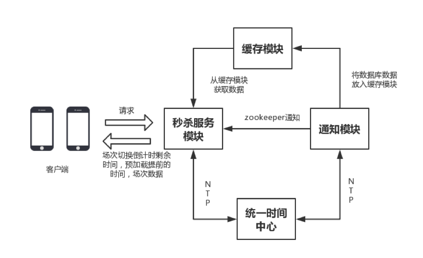
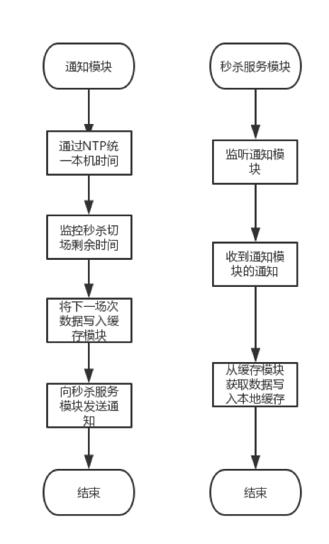
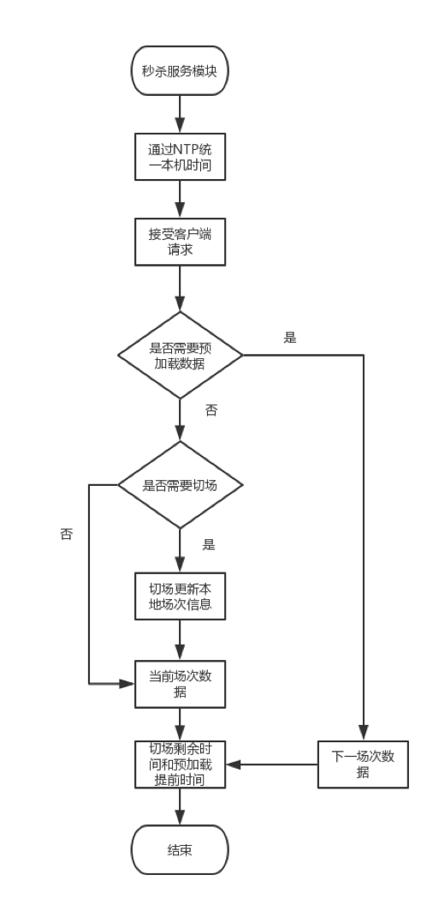
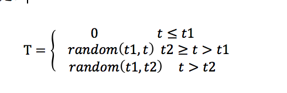
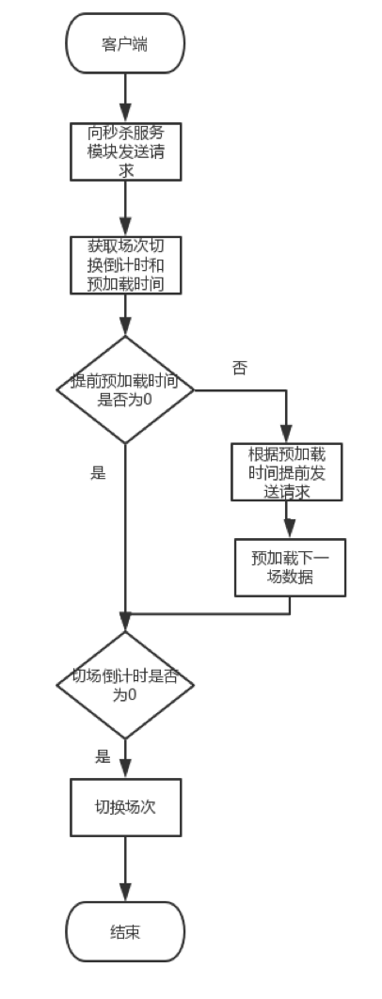

背景：
在电子商务领域中，秒杀场次的切换一直是难点之一。秒杀促销过程中，往往会有多个场次的秒杀商品，每隔一段时间就会进行场次的切换，当秒杀从一个场次切换到另一个场次，海量的客户端会同时对服务器发起请求，瞬时的巨大流量将会对服务器和数据库造成巨大的压力。
目前秒杀场次切换的技术方案一般是客户端展示秒杀场次开始倒计时，由用户在倒计时到0的时候手动刷新客户端请求服务器获取数据。具体流程如下：
1.用户在客户端手动刷新
2.客户端向服务器发送请求
3.服务器根据本机的时间判断是否应该切场
4.如果需要切场，则服务器从数据库中获取下一场次的数据
针对上面的参考方案，主要有以下几种缺点：
1.秒杀的切场依赖于用户主动的刷新，因此无法做到自动刷新场次，容易导致用户错失秒杀抢购时间区间，为了及时切换场次，在切场前后用户会频繁的刷新，间接加重了服务器和数据库的负担。
2．切场过程中，所有的客户端同时向服务器请求数据，会产生尖峰流量，对网络带宽和服务器造成巨大的压力。并且服务器同时去数据库中获取数据的过程，也会对数据库造成巨大的压力。
3．切场过程中网络和服务器资源紧张、系统响应慢会造成切场过程的不流畅，降低用户体验。
为了解决以上问题，本文提出了一种秒杀自动切场的方法和系统，在客户端采用数据预加载技术，将切场过程中瞬时流量前置平摊到一段时间内，在服务器端采用缓存技术，解决了现有方法切场过程中对带宽，服务器和数据库压力大、切场不及时、用户体验差等问题。
本文方法模块具体实现的模块如下：
1.秒杀服务模块：负责接受通知模块的通知和处理客户端的请求，秒杀服务模块收到通知后从缓存模块获取下一个场次的秒杀数据放入本地缓存中，根据客户端的请求计算秒杀切场倒计时剩余时间和预加载提前的时间，并将结果和场次数据返回客户端。
2.缓存模块：负责缓存下一个场次的秒杀数据，将数据缓存到redis中。
3.通知模块：监控秒杀切场剩余时间，在秒杀切场前将下一场次秒杀数据从数据库写入缓存模块，并通过zookeeper通知秒杀服务模块获取下一个场次的秒杀数据。
4.统一时间中心：通过NTP协议确保秒杀服务模块中的所有机器和通知模块的时间统一，保证同一时刻切场。
5.客户端：向秒杀服务模块请求数据，根据预加载时间提前加载下一场次的数据，场次切换剩余时间为0后切换场次并负责展示数据。

对该技术方案的详细步骤描述如下：
- 1 ）通知模块将数据写入缓存模块并通知秒杀服务模块的流程如下：

1.通知模块通过NTP协议将本机时间和统一时间中心同步
2.监控秒杀切场的剩余时间，如果剩余时间小于某个阈值则执行后续的操作
3.从数据库中获取下一场次的数据并写入缓存模块
4.通知模块通过zookeeper通知秒杀服务模块，数据已经写入缓存模块完毕
5.秒杀服务模块监听通知模块，如果收到通知则执行后续操作
6.秒杀服务模块收到通知之后，从缓存模块读取数据并写入本地的缓存中 - 2） 秒杀服务模块处理客户端请求并返回结果

1.秒杀服务模块通过NTP协议将本机时间和统一时间中心同步
2．接受客户端发送的请求
3.根据请求判断，是否需要预加载下一场次数据。如果需要预加载则获取下一场次数据
4.如果不需要预加载则根据本机时间判断是否需要切场，如果需要切场则服务器切换场次，更新本地场次信息，用下一个场次的数据替代当前场次数据，最后返回当前场次的数据。
5.重新计算秒杀切场剩余时间和预加载提前时间。提前预加载时间由如下公式确定：

T表示提前预加载时间，t表示当前时间，t1表示提前预加载最小时间，t2表示提前预加载最大时间。
6.将处理结果返回给客户端 - 3 ）客户端切换场次

1.客户端向秒杀服务模块发送请求
2.获取秒杀服务模块返回的场次切换倒计时和预加载提前时间
3.如果提前预加载时间为0为表示不提前预加载
4.如果提前预加载的时间不为0，则根据提前的时间向服务器发送请求，预加载下一场次的数据，并保存到客户端本地。
5.如果场次切换倒计时为0，则进行切场。如果已经预加载了数据，则不再向秒杀服务模块发送请求，直接使用本地预加载数据进行切场；如果未预加载数据，则向秒杀服务模块请求数据，得到数据之后进行切场本文提出的一种秒杀场次自动切换的方法和系统，具有以下的收益：
1）实现自动切场的功能，用户不需要手动刷新数据进行切场，提高了场次切换的准确性和及时性，提升了用户的体验。
2）切场时间和预加载时间可以由后台动态控制。
3）随机的预加载时间分布减轻了切场瞬间尖峰流量对网络带宽和服务器的压力。
4）减轻了切场前后对数据库的压力，提高了数据的访问速度。